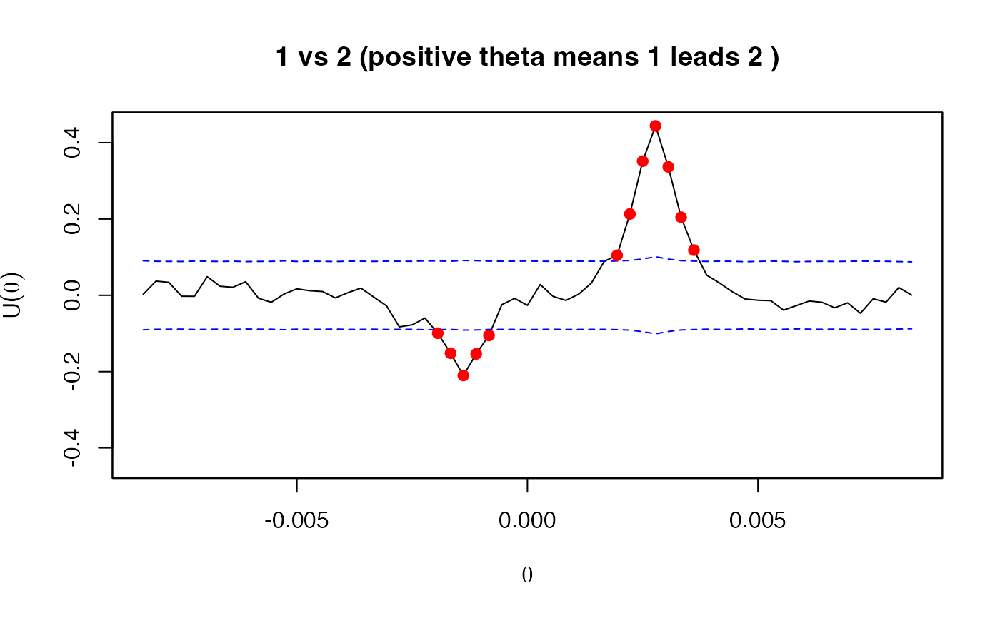
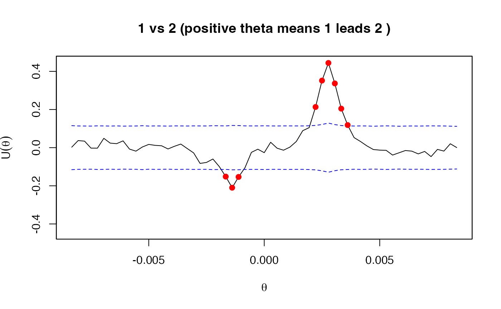

Multiple Lead-Lag Detector
mllag.RdDetecting the lead-lag parameters of discretely observed processes by picking time shifts at which the Hayashi-Yoshida cross-correlation functions exceed thresholds, which are constructed based on the asymptotic theory of Hayashi and Yoshida (2011).
mllag(x, from = -Inf, to = Inf, division = FALSE, grid, psd = TRUE,
plot = TRUE, alpha = 0.01, fisher = TRUE, bw)Arguments
- x
an object of
yuima-classoryuima.data-classoryuima.llag-class(output ofllag) oryuima.mllag-class(output of this function).- from
passed to
llag.- to
passed to
llag.- division
passed to
llag.- grid
passed to
llag.- psd
passed to
llag.- plot
logical. If
TRUE, the estimated cross-correlation functions and the pointwise confidence intervals (under the null hypothesis that the corresponding correlation is zero) as well as the detected lead-lag parameters are plotted.- alpha
a positive number indicating the significance level of the confidence intervals for the cross-correlation functions.
- fisher
logical. If
TRUE, the p-values and the confidence intervals for the cross-correlation functions is evaluated after applying the Fisher z transformation.- bw
passed to
llag.
Details
The computation method of cross-correlation functions and confidence intervals is the same as the one used in llag. The exception between this function and llag is how to detect the lead-lag parameters. While llag only returns the maximizer of the absolute value of the cross-correlations following the theory of Hoffmann et al. (2013), this function returns all the time shifts at which the cross-correlations exceed (so there is also the possibility that no lead-lag is returned). Note that this approach is mathematically debatable because there would be a multiple testing problem (see also 'Note' of llag), so the interpretation of the result from this function should carefully be addressed. In particular, the significance level alpha probably does not give the "correct" level.
Value
An object of class "yuima.mllag", which is a list with the following elements:
- mlagcce
a list of
data.frame-class objects consisting oflagcce(lead-lag parameters),p.valueandcorrelation.- LLR
a matrix consisting of lead-lag ratios. See Huth and Abergel (2014) for details.
- ccor
a list of computed cross-correlation functions.
- avar
a list of computed asymptotic variances of the cross-correlations (if
ci = TRUE).- CI
a list of computed confidence intervals.
References
Hayashi, T. and Yoshida, N. (2011) Nonsynchronous covariation process and limit theorems, Stochastic processes and their applications, 121, 2416–2454.
Hoffmann, M., Rosenbaum, M. and Yoshida, N. (2013) Estimation of the lead-lag parameter from non-synchronous data, Bernoulli, 19, no. 2, 426–461.
Huth, N. and Abergel, F. (2014) High frequency lead/lag relationships — Empirical facts, Journal of Empirical Finance, 26, 41–58.
Examples
# The first example is taken from llag
## Set a model
diff.coef.matrix <- matrix(c("sqrt(x1)", "3/5*sqrt(x2)",
"1/3*sqrt(x3)", "", "4/5*sqrt(x2)","2/3*sqrt(x3)",
"","","2/3*sqrt(x3)"), 3, 3)
drift <- c("1-x1","2*(10-x2)","3*(4-x3)")
cor.mod <- setModel(drift = drift,
diffusion = diff.coef.matrix,
solve.variable = c("x1", "x2","x3"))
set.seed(111)
## We use a function poisson.random.sampling
## to get observation by Poisson sampling.
yuima.samp <- setSampling(Terminal = 1, n = 1200)
#> Warning:
#> YUIMA: 'delta' (re)defined.
yuima <- setYuima(model = cor.mod, sampling = yuima.samp)
yuima <- simulate(yuima,xinit=c(1,7,5))
## intentionally displace the second time series
data2 <- yuima@data@zoo.data[[2]]
time2 <- time(data2)
theta2 <- 0.05 # the lag of x2 behind x1
stime2 <- time2 + theta2
time(yuima@data@zoo.data[[2]]) <- stime2
data3 <- yuima@data@zoo.data[[3]]
time3 <- time(data3)
theta3 <- 0.12 # the lag of x3 behind x1
stime3 <- time3 + theta3
time(yuima@data@zoo.data[[3]]) <- stime3
## sampled data by Poisson rules
psample<- poisson.random.sampling(yuima,
rate = c(0.2,0.3,0.4), n = 1000)
## We search lead-lag parameters on the interval [-0.1, 0.1] with step size 0.01
G <- seq(-0.1,0.1,by=0.01)
## lead-lag estimation by mllag
par(mfcol=c(3,1))
result <- mllag(psample, grid = G)
## Since the lead-lag parameter for the pair(x1, x3) is not contained in G,
## no lead-lag parameter is detected for this pair
par(mfcol=c(1,1))
# The second example is a situation where multiple lead-lag effects exist
set.seed(222)
n <- 3600
Times <- seq(0, 1, by = 1/n)
R1 <- 0.6
R2 <- -0.3
dW1 <- rnorm(n + 10)/sqrt(n)
dW2 <- rnorm(n + 5)/sqrt(n)
dW3 <- rnorm(n)/sqrt(n)
x <- zoo(diffinv(dW1[-(1:10)] + dW2[1:n]), Times)
y <- zoo(diffinv(R1 * dW1[1:n] + R2 * dW2[-(1:5)] +
sqrt(1- R1^2 - R2^2) * dW3), Times)
## In this setting, both x and y have a component leading to the other,
## but x's leading component dominates y's one
yuima <- setData(list(x, y))
## Lead-lag estimation by llag
G <- seq(-30/n, 30/n, by = 1/n)
est <- llag(yuima, grid = G, ci = TRUE)
## The shape of the plotted cross-correlation is evidently bimodal,
## so there are likely two lead-lag parameters
## Lead-lag estimation by mllag
mllag(est) # succeeds in detecting two lead-lag parameters
#> Estimated lead-lag parameters
#> $`(1,2)`
#> lagcce p.values correlation
#> -0.0014 -0.001388889 1.686085e-35 -0.2027184
#> 0.0028 0.002777778 2.104888e-144 0.3993129
#>
#> Lead-lag ratio
#> [,1] [,2]
#> [1,] 1.000000 3.291845
#> [2,] 0.303781 1.000000
## Next consider a non-synchronous sampling case
psample <- poisson.random.sampling(yuima, n = n, rate = c(0.8, 0.7))
## Lead-lag estimation by mllag
est <- mllag(psample, grid = G)

est # detects too many lead-lag parameters
#> Estimated lead-lag parameters
#> $`(1,2)`
#> lagcce p.values correlation
#> -0.0019 -0.0019444444 4.359026e-03 -0.09947386
#> -0.0017 -0.0016666667 1.094913e-05 -0.15183025
#> -0.0014 -0.0013888889 1.904892e-09 -0.21000618
#> -0.0011 -0.0011111111 1.196010e-05 -0.15352886
#> -8e-04 -0.0008333333 2.502363e-03 -0.10497550
#> 0.0019 0.0019444444 2.658111e-03 0.10489307
#> 0.0022 0.0022222222 1.132348e-09 0.21323262
#> 0.0025 0.0025000000 4.064368e-23 0.35162642
#> 0.0028 0.0027777778 8.132096e-34 0.44407355
#> 0.0031 0.0030555556 2.355384e-21 0.33670488
#> 0.0033 0.0033333333 4.331486e-09 0.20461114
#> 0.0036 0.0036111111 6.603609e-04 0.11843907
#>
#> Lead-lag ratio
#> [,1] [,2]
#> [1,] 1.0000000 4.114432
#> [2,] 0.2430469 1.000000
## Using a lower significant level
mllag(est, alpha = 0.001) # insufficient

#> Estimated lead-lag parameters
#> $`(1,2)`
#> lagcce p.values correlation
#> -0.0017 -0.001666667 1.094913e-05 -0.1518302
#> -0.0014 -0.001388889 1.904892e-09 -0.2100062
#> -0.0011 -0.001111111 1.196010e-05 -0.1535289
#> 0.0022 0.002222222 1.132348e-09 0.2132326
#> 0.0025 0.002500000 4.064368e-23 0.3516264
#> 0.0028 0.002777778 8.132096e-34 0.4440735
#> 0.0031 0.003055556 2.355384e-21 0.3367049
#> 0.0033 0.003333333 4.331486e-09 0.2046111
#> 0.0036 0.003611111 6.603609e-04 0.1184391
#>
#> Lead-lag ratio
#> [,1] [,2]
#> [1,] 1.0000000 4.114432
#> [2,] 0.2430469 1.000000
## As the plot reveals, one reason is because the grid is too dense
## In fact, this phenomenon can be avoided by using a coarser grid
mllag(psample, grid = seq(-30/n, 30/n, by=5/n)) # succeeds!
 #> Estimated lead-lag parameters
#> $`(1,2)`
#> lagcce p.values correlation
#> -0.0014 -0.001388889 1.904892e-09 -0.2100062
#> 0.0028 0.002777778 8.132096e-34 0.4440735
#>
#> Lead-lag ratio
#> [,1] [,2]
#> [1,] 1.0000000 3.745384
#> [2,] 0.2669953 1.000000
#> Estimated lead-lag parameters
#> $`(1,2)`
#> lagcce p.values correlation
#> -0.0014 -0.001388889 1.904892e-09 -0.2100062
#> 0.0028 0.002777778 8.132096e-34 0.4440735
#>
#> Lead-lag ratio
#> [,1] [,2]
#> [1,] 1.0000000 3.745384
#> [2,] 0.2669953 1.000000